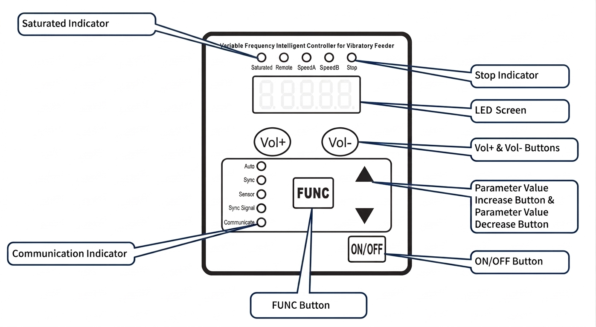
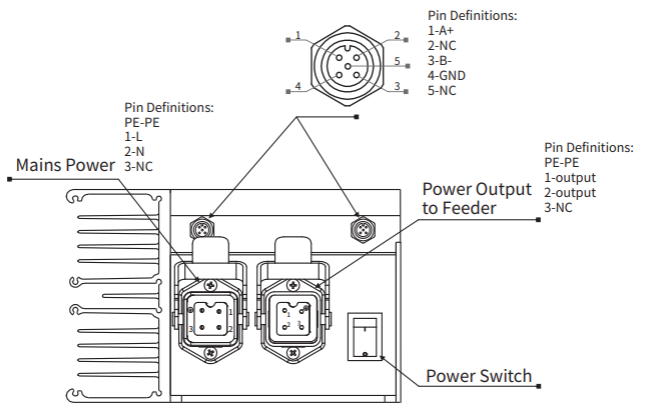
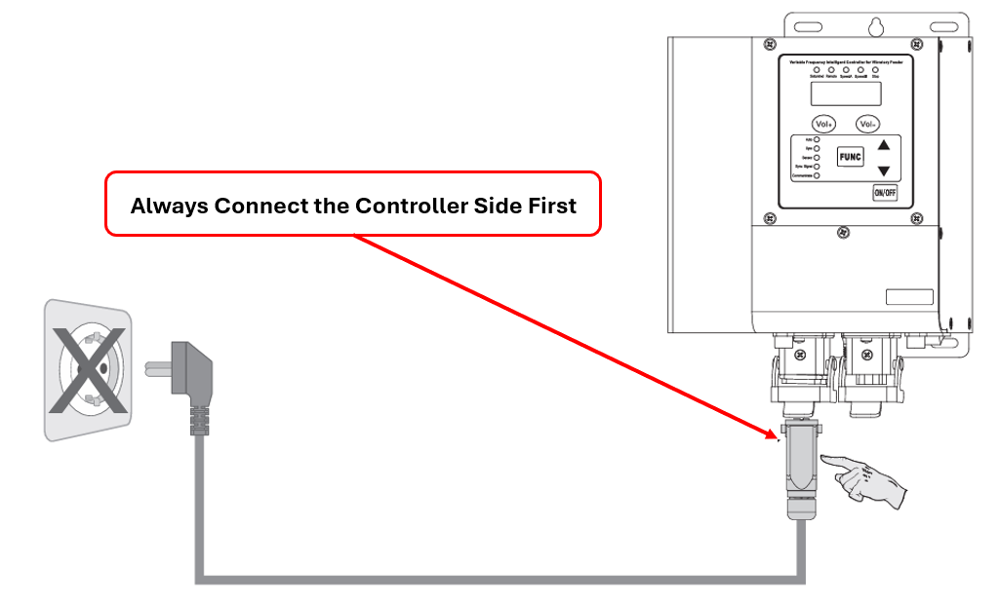
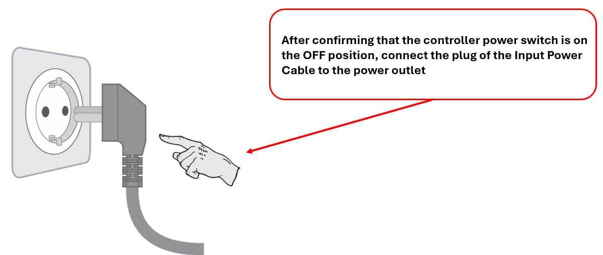
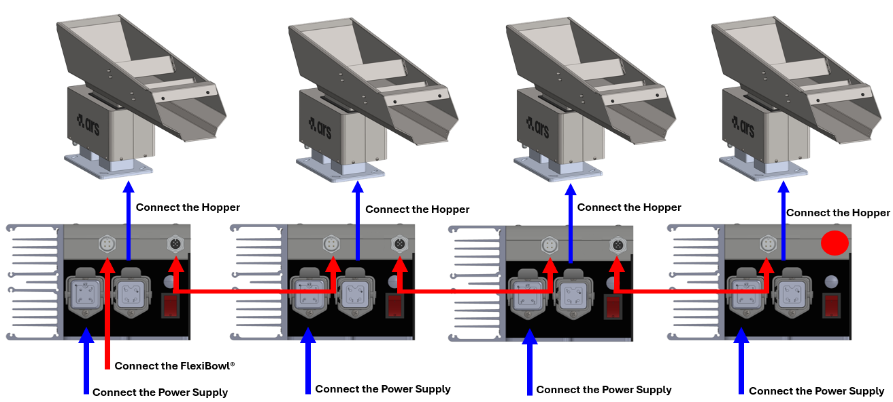
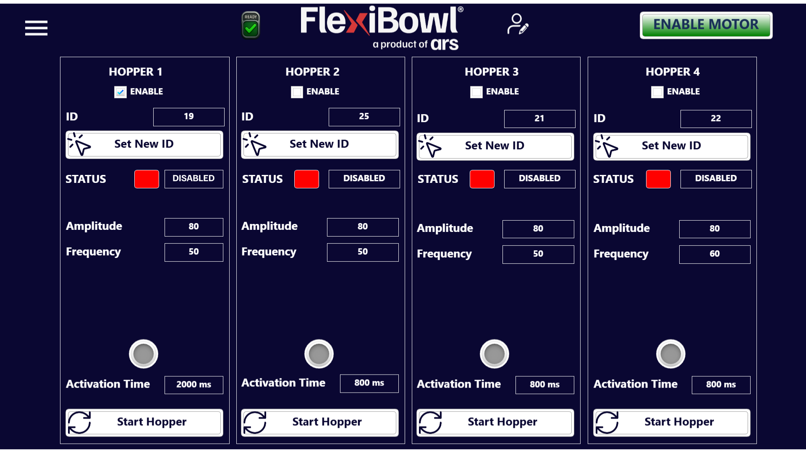
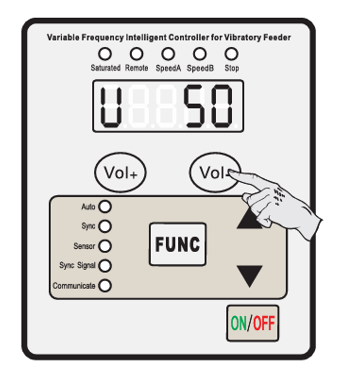

Contrôleur et câblage#
Pendant son fonctionnement, la machine ne nécessite pas la présence continue d’un opérateur.
Attention
Utiliser la machine à une fin autre que celle prévue par le Constructeur pourrait causer de graves dommages aux personnes et/ou aux biens et/ou aux animaux. La société ARS S.r.l. décline toute responsabilité pour les dommages causés par un usage inapproprié de la machine.
Description du contrôleur#
Le contrôleur numérique (mod. SDVC34-XLRH) est un contrôleur à fréquence variable équipé d’un microprocesseur, d’un afficheur LED et d’un clavier de commande (boutons Vol+/Vol- pour la tension de sortie, boutons ▲/▼ pour les paramètres, touche FUNC pour la sélection, touche ON/OFF pour la mise sous/hors tension et le verrouillage du clavier).
Par défaut, le contrôleur ne génère aucune sortie à la mise sous tension et reste à l’état d’arrêt : pour activer la sortie principale, il faut appliquer un signal PNP sur l’Enable Output Port (connecteur 4 broches).
Le contrôleur intègre des protections automatiques :
Court-circuit → arrêt immédiat de la sortie, erreur
Err01Surintensité → arrêt immédiat de la sortie, erreur
Err02Surtempérature → arrêt de la sortie au-delà de 65 °C, réarmement automatique en dessous de 60 °C, erreur
Err03
La communication s’effectue via le port RS485 (protocole Modbus), avec une adresse réseau réglable de 1 à 31 et un débit en bauds configurable.
Données techniques du contrôleur#
Caractéristique technique |
Min |
Typique |
Max |
Unité |
Notes |
|---|---|---|---|---|---|
Tension d’entrée |
85 |
220 |
250 |
V |
AC RMS |
Plage de tension de sortie réglable |
0 |
— |
260 |
V |
Inférieure à 150 % de la tension d’entrée |
Précision de régulation de la tension |
— |
1 |
— |
V |
— |
Précision de régulation de la tension (ΔVout/ΔVin) |
0 |
— |
10 |
% |
ΔVout/ΔVin |
Plage de courant de sortie réglable |
0 |
— |
6 |
A |
— |
Puissance de sortie |
0 |
— |
1320 |
VA |
— |
Fréquence de sortie |
30,0 |
— |
130,0 |
Hz |
— |
Précision de régulation de la fréquence |
— |
0,1 |
— |
Hz |
— |
Forme d’onde de sortie |
— |
Sinusoïdale |
— |
— |
— |
Température de déclenchement de la protection contre la surtempérature |
60 |
65 |
65 |
°C |
— |
Communication numérique |
— |
ModBus 485 |
— |
— |
— |
Méthode de réglage |
— |
6 |
— |
Boutons |
— |
Consommation en veille |
— |
7 |
— |
W |
— |
Méthode d’affichage |
— |
5 |
— |
Chiffres |
LED |
Température ambiante |
0 |
25 |
40 |
°C |
Sans condensation |
Humidité ambiante |
10 |
60 |
85 |
% |
Sans condensation |
Température ambiante de stockage |
-20 |
25 |
65 |
°C |
Sans condensation |
Attention
Il est possible d’intégrer des contrôleurs autres que celui fourni par le Constructeur, à condition que ce dernier en ait préalablement validé les caractéristiques techniques. La société ARS s.r.l. décline toute responsabilité pour les dommages causés par l’utilisation d’un contrôleur non validé ou non compatible avec la machine.
Commandes du panneau avant#


Élément |
Fonction |
|---|---|
Afficheur LED |
Affiche le paramètre courant et sa valeur |
Indicateur Saturated |
Signale la saturation du signal de sortie |
Indicateur Remote |
Signale que la commande à distance est active |
Indicateurs Speed A / Speed B |
Signalent la vitesse/sortie active |
Indicateur Stop |
Signale l’état d’arrêt |
Boutons Vol+ / Vol- |
Règlent les Paramètres communs (voir ci-dessous), à tout moment |
Bouton FUNC |
Entrée/sortie et navigation dans les Paramètres de base |
Boutons ▲ / ▼ |
Incrémentent/décrémentent la valeur du paramètre sélectionné |
Indicateurs Auto / Sync / Sensor / Sync Signal / Communicate |
État du fonctionnement et de la communication RS485 |
Bouton ON/OFF |
Mise sous/hors tension du contrôleur |
Connecteurs arrière#


Connecteur |
Fonction |
Pinout |
||||||||||||
|---|---|---|---|---|---|---|---|---|---|---|---|---|---|---|
Mains Power (alimentation) |
Alimentation secteur |
Brochage du connecteur
|
||||||||||||
Enable Output Port (4 broches) |
Sortie d’activation pour la commande externe du Bulk Feeder, utilisée lorsque celui-ci est acheté séparément et doit être piloté par un dispositif externe. Câble disponible en option : Câble d’entrée. |
Brochage du connecteur à 4 broches
|
||||||||||||
RS485 Port (2× 5 broches) |
Deux connecteurs RS485 identiques : l’un relie le contrôleur au FlexiBowl®, l’autre permet le raccordement en daisy chain de plusieurs Bulk Feeder. Câble disponible en option : Câble Modbus RTU. Important Dans une configuration à Bulk Feeder unique, le connecteur non utilisé doit être fermé avec le bouchon de terminaison fourni, doté d’une résistance de 120 Ω entre A+ et B- |
Brochage du connecteur à 5 broches
|
||||||||||||
Power Output to Feeder (sortie vers le Bulk Feeder) |
Alimentation vers le Bulk Feeder |
Brochage du connecteur
|
||||||||||||
Power Switch |
Interrupteur marche/arrêt |
— |
Procédures d’utilisation#
Vérifications préliminaires#
Avant de procéder à la mise en service de la machine, il faut effectuer les vérifications suivantes :
Séquence de raccordement électrique#
Quel que soit le type de contrôleur utilisé (standard, analogique ou numérique), le raccordement électrique entre le Bulk Feeder, le contrôleur et le FlexiBowl® suit une séquence précise. La séquence diffère légèrement selon le modèle : les FlexiBowl® 500/650/800/1200 disposent d’un panneau standard avec connecteur HOPPER intégré, tandis que les FlexiBowl® 200/350 utilisent un rack externe doté de son propre connecteur HOPPER.
FlexiBowl® 500 / 650 / 800 / 1200 — panneau standard#
Attention
*Le capuchon doit assurer une résistance de 120 Ω entre les canaux A+ et B-.
Important
Raccordez toujours d’abord le côté contrôleur du câble d’alimentation, et n’insérez la fiche dans la prise de courant qu’ensuite.




Raccordement en cascade de plusieurs Bulk Feeder#
Sur les modèles avec panneau standard, il est possible de raccorder plusieurs unités Hopper Controller en cascade, en alimentant chaque contrôleur individuellement et en reliant les connecteurs d’une unité à la suivante.


FlexiBowl® 200 / 350 — panneau rack#
Attention
*Le capuchon doit assurer une résistance de 120 Ω entre les canaux A+ et B-.
Important
Raccordez toujours d’abord le côté contrôleur du câble d’alimentation, et n’insérez la fiche dans la prise de courant qu’ensuite.
Note
Alimentation standard du contrôleur : 115 Vac ou 230 Vac ±5 %. Vérifiez toujours que le conducteur de terre est correctement installé et intact avant de mettre le système sous tension.
Réglage de l’adresse de communication#
Une fois le câblage électrique terminé, l’étape suivante consiste à définir une adresse de communication unique sur chaque contrôleur, via le paramètre Communication Address (r).
Note
Le paramètre r représente l’ID du contrôleur sur le réseau de communication RS485. Lorsque plusieurs contrôleurs sont raccordés au même réseau (p. ex. plusieurs Bulk Feeder), il est obligatoire d’attribuer à chacun une adresse différente, dans la plage 1–31, afin de pouvoir les distinguer et les commander individuellement.
Interface logicielle Hopper#
Une fois l’adresse unique attribuée à chaque contrôleur, les Bulk Feeder sont intégrés au logiciel FlexiBowl® et peuvent être commandés directement depuis son interface, sans avoir besoin d’agir manuellement sur chaque contrôleur.


Depuis l’interface logicielle, il est possible, pour chaque Bulk Feeder connecté, de :
Champ |
Fonction |
|---|---|
ID |
Adresse de communication du contrôleur (doit correspondre à celle définie manuellement) |
ENABLE |
Active le Bulk Feeder pour le fonctionnement |
Set New ID |
Attribue une nouvelle adresse de communication depuis le logiciel |
STATUS |
État actuel du Bulk Feeder (p. ex. Disabled) |
Amplitude |
Amplitude de vibration |
Frequency |
Fréquence de vibration |
Activation Time |
Temps d’activation du Bulk Feeder (ms) |
Start Hopper |
Démarre manuellement le Bulk Feeder |
Note
Tous les réglages disponibles via l’interface logicielle peuvent également être effectués directement depuis le contrôleur, au moyen des Paramètres communs et de base décrits ci-dessous.
Paramètres communs#
Les Paramètres communs peuvent être réglés à tout moment avec les boutons Vol+ / Vol-, même lorsqu’un autre paramètre est affiché : à la fin du réglage, le contrôleur revient automatiquement à l’affichage du paramètre précédent.


Définition |
Symbole |
Plage |
Par défaut |
|---|---|---|---|
Output Voltage (tension de sortie) |
|
0–260 (V) |
50 |
Paramètres de base#
Définition |
Symbole |
Plage |
Par défaut |
|---|---|---|---|
Output Frequency (fréquence de sortie) |
|
40,0–200,0 (Hz) |
100,0 |
Max Adjustable Output Voltage (tension maximale réglable) |
|
0–260 (V) |
260 |
Communication Address (adresse RS485) |
|
1–31 |
1 |
Communication Baud Rate (vitesse de communication) |
|
0,3–115,2 kbit/s |
115,2 |
Controller Reset |
|
— |
— |
Procédure de Controller Reset#
Warning
Le Controller Reset ramène tous les Paramètres communs et de base à leurs valeurs par défaut (Output Voltage 50, Output Frequency 100,0 Hz, Max Output Voltage 260, Communication Address 1, Baud Rate 115,2 kbit/s). L’utiliser avec prudence si des configurations personnalisées sont présentes — en particulier l’adresse de communication, qui devra être redéfinie.
Mise en service du Bulk Feeder#
Important
Si le système inclut FlexiVision One, la configuration des paramètres du Bulk Feeder est guidée dans la section Configuration du Bulk Feeder.
Sinon, reportez-vous à la section Hopper de ce manuel.